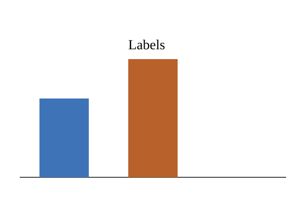

One
Two to four
Until three
Three on
Only four

Bars appear
Labels
Overlapping words here
Second text on top
Past the right edge
Visible line
Hidden second line
Tiny note text
Next one
Next two
Same as two
An element with an id
Same title as the previous slide